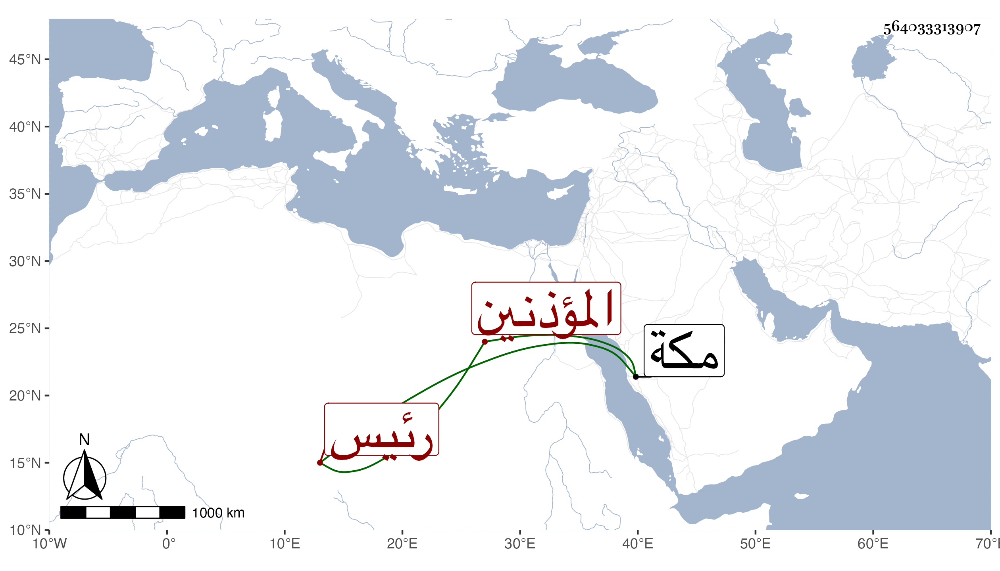

0902Sakhawi.DawLamic.ITO20230111-ara1.EIS1600.564033313907
Biography ID: 564033313907
374
أبو عبد الله بن أبي الخير بن محمد بن أبي الخير بن علي بن عبد الله بن علي بن محمد بن عبد السلام رئيس المؤذنين بمكة ووالد أبي بكر الماضي ويسمى كأبيه محمدا شارك والده في الرياسة ثم استقل بعد موته وذكر لي أن مولده سنة تسع وأربعين وثمانمائة وأنه قرأ البخاري على الشهاب القمني حين مجاورته سنة إحدى وسبعين وكذا سمع على أشياء ويتعانى النظم ... ويرمى بما كان أبوه يذكر به .
